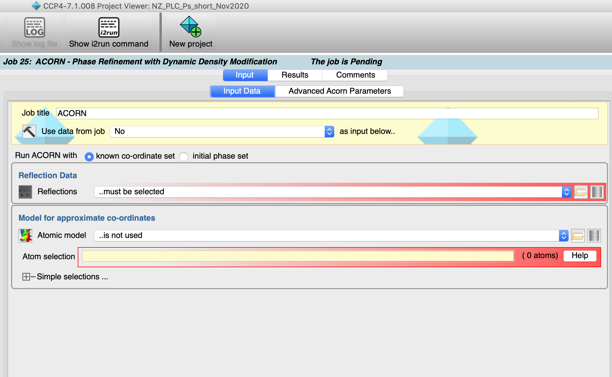
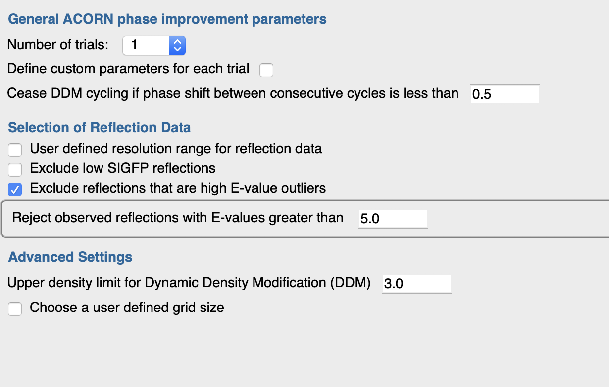
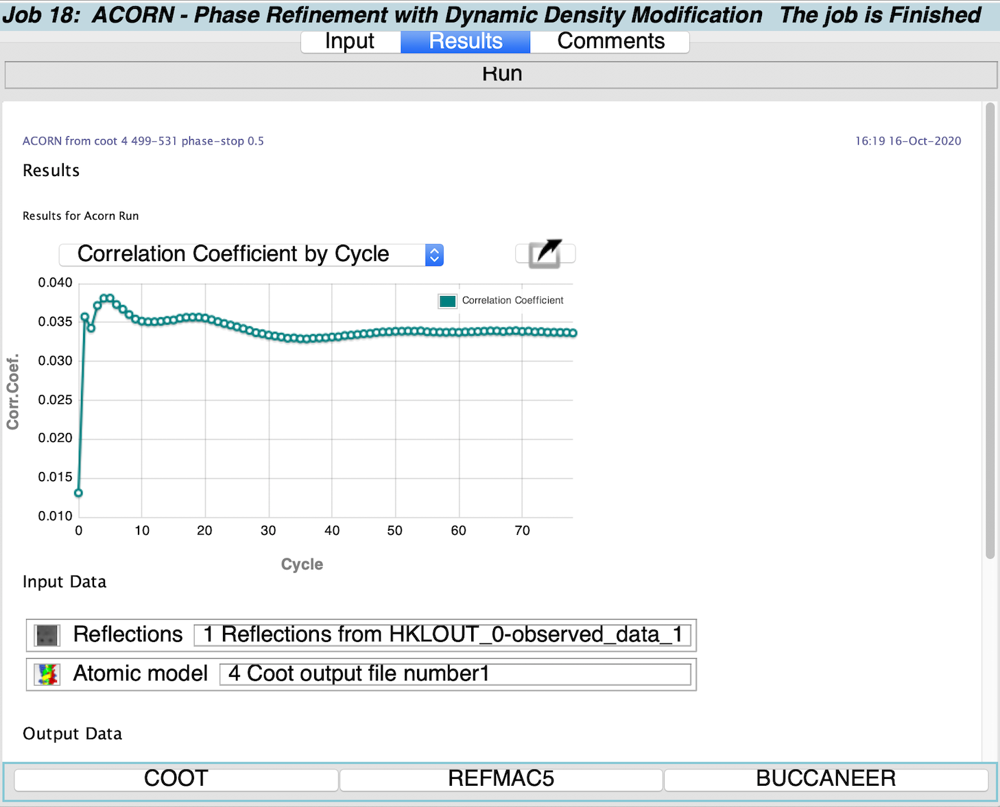
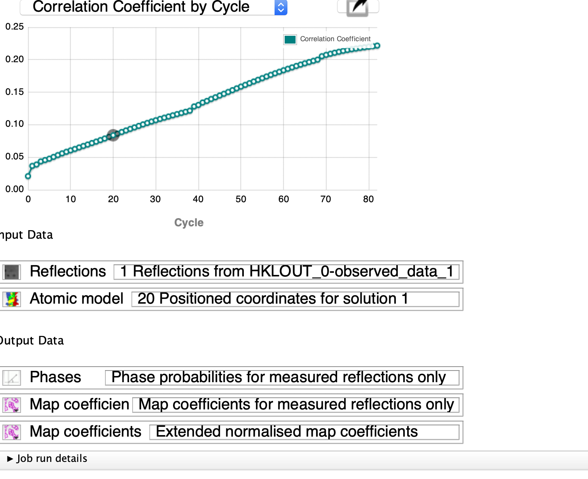

Density Modification using Acorn¶
All “Density modification” procedures are aimed at improving initial phase estimates to produce a more interpretable electron density map. These procedures should always be applied as a follow on to experimental phasing, to resolve phase ambiguities and estimate phases for the many reflections with low figures of merit. It may also be applied after molecular replacement with the aim of removing bias towards the search model.
ACORN is a fast density modification procedure for use when the resolution of the experimental data is sufficient to show separate atom sites in the maps. It can be used for structures with observed data resolution as low as 1.7Å and reasonably accurate starting phases, but is more consistently successful when the resolution is 1.5Å or better. The required inputs for ACORN are a set of observations, and either (2) a set of pre-determined phases or (1) a partial model to be used to generate the starting phases.
Before calculating a map, the observed reflection amplitudes are corrected for anisotropy, then “normalised”; i.e. the amplitudes are modified so that the mean value in all resolutions shells is approximately unity. The modified Fs are labelled as Es.
Dynamic Density Modification (DDM). The map calculated from the current phase set is modified by eliminating negative density and truncating the highest density. Other options are described in the documentation (https://www.ccp4.ac.uk/html/acorn.html). A new set of phases is derived from this modified map, and the procedure iterated until the phase shift between cycles is less than a pre-set value (default 0.5°).
The “Free Lunch” algorithm. If the observed data resolution is poorer than 1.0Å the list of reflection indices is first extended to 1.0Å and all these are assigned E values of 1.0, the mean expected value. Including these terms with estimated amplitudes but reasonable phases improves the resolution of the map to be modified.
Indication of Success. The observed E values are divided into three sets: strong, medium and weak. Only the strong and weak reflections are used in the map calculation so the CC of the Eobs and Ecalc for the medium set acts as an independent Figure of Merit for the procedure. If ACORN is successful, the CC for these medium reflections will increase as the map improves. A CC of 0.2 or above provides a simple criterion to suggest the correctness for a phase set is sufficient to enable subsequent model building.
Selecting starting phases. The phases generated from a prior refinement of a molecular replacement solution provide a good starting point. Alternatively, experimental phases (even to medium resolution) as long as there are associated high resolution amplitudes give an excellent starting point. The procedure can rapidly generate a complete and more accurate phase set.
Selecting a model. A starting model can be of various types. (1) A correctly placed molecular replacement (MR) model should provide a sufficiently good starting set of phases. These coordinates can consist of the whole contents of the asymmetric unit, a domain, or even a small fragment such as an alpha helix. The lower the resolution the more complete the starting model needs to be. ACORN provides an excellent correction to any phase bias resulting from defects in the MR model. (2) For data to a resolution of about 1.2Å or higher, it need only be a small fraction of the cell content. such as a sub-set of correctly positioned heavier atoms, possibly found from their anomalous contributions, e.g. metals, selenium or sulphur sites, or a correctly positioned motif such as a helix.
Input¶
The experimental data must be selected (1). Then one of two options must be selected for the phasing trigger. (1) A starting model. An atom selection can be made from the starting model as shown below. (2) A set of phases from experimental phasing or from a previous refinement run.


Advanced options¶
Results¶

plot of cc If this goes up - good, it it stays level - bad

Output¶
Phase probabilities for measured reflections
Map Coefficients for measured reflections
Extended normalised Map Coefficients
Follow-on tasks (5) include manual model building - usually to inspect the quality of the map - and automated model building.